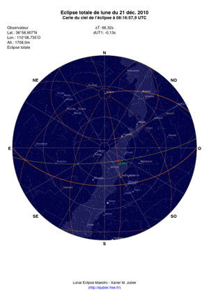

Carte du ciel au format PDF
Le fichier PDF en couleur et haute résolution contient une carte du ciel au maximum de l’éclipse depuis le lieu de l’observateur.
Les informations présentes sur la carte sont explicites.L’écliptique est indiqué en jaune. Les étoiles de première et seconde magnitude peuvent être affichées. La Voie Lactée et le dessin astronomique des constellations peuvent aussi être ajoutés, ainsi que les étoiles jusqu’à la magnitude 8,5.

L’utilisation de cette carte est libre tant que les informations du créateur sont présentes et n’ont pas été modifiées.